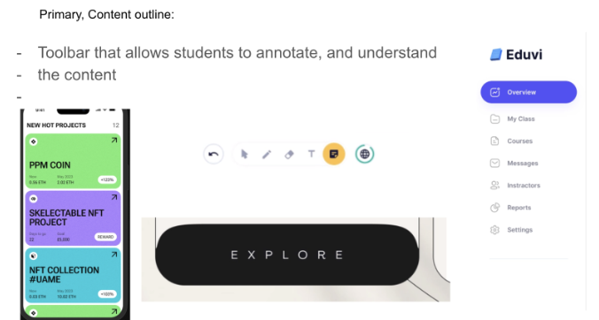
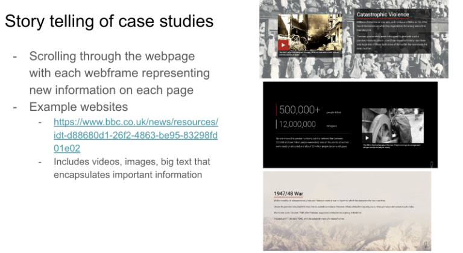
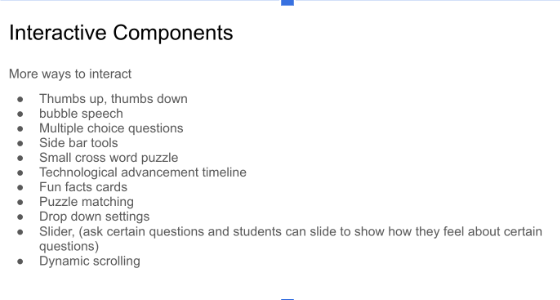
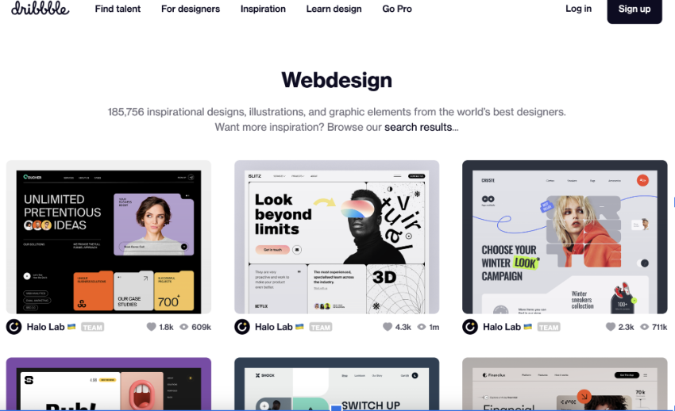
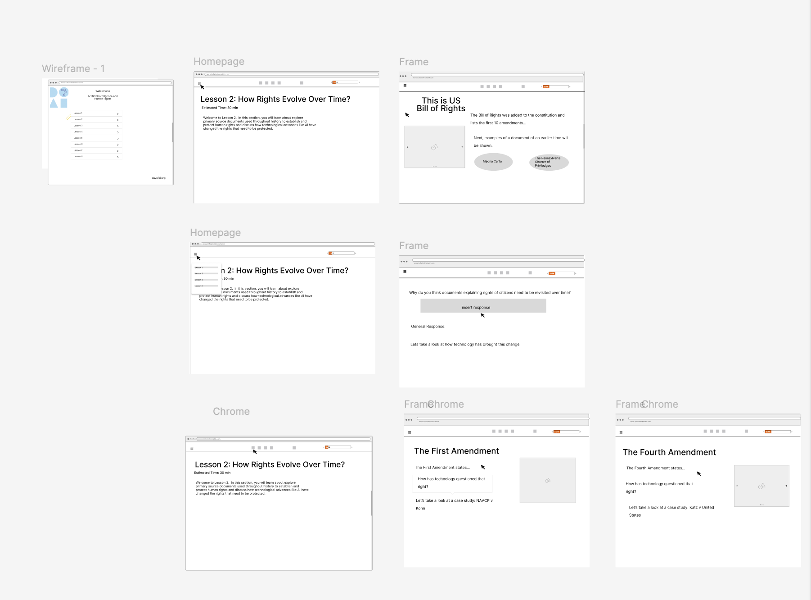
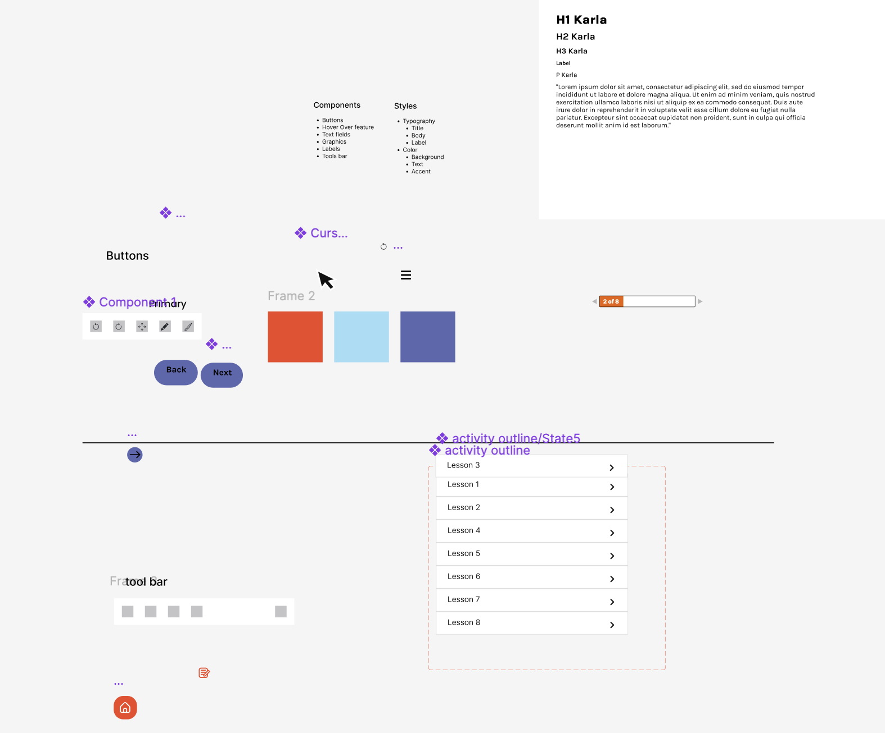
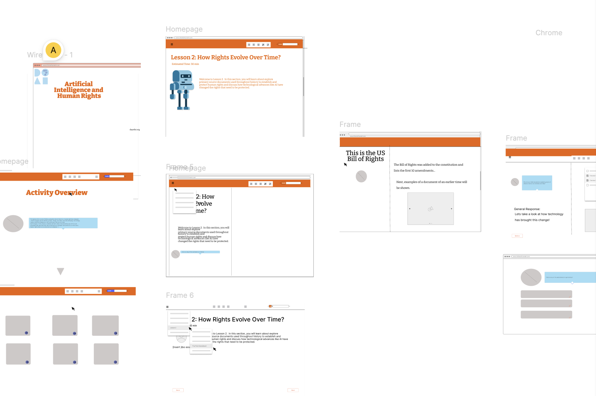
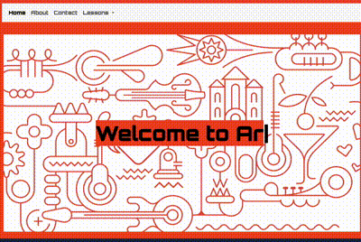
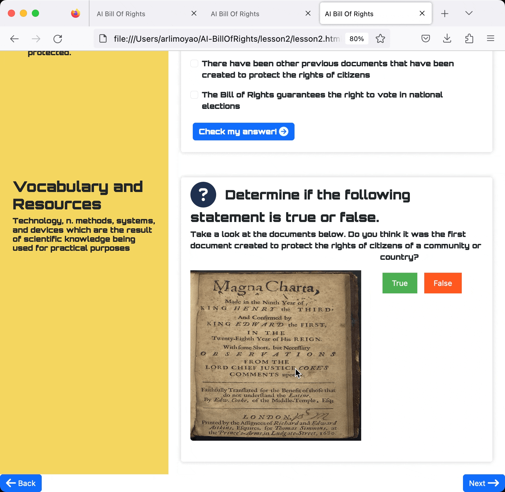
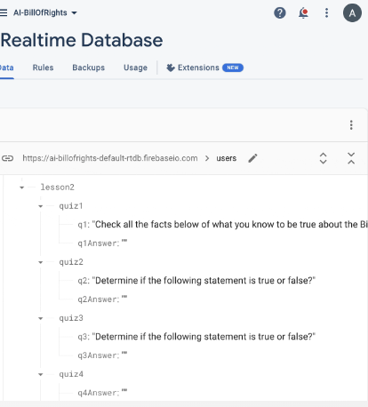

<!doctype html>
<html lang="en">
  <head>
    <meta charset="utf-8">
    <meta name="viewport" content="width=device-width, initial-scale=1">
    <title>Arli's Website</title>
    <link href="https://cdn.jsdelivr.net/npm/bootstrap@5.3.3/dist/css/bootstrap.min.css" rel="stylesheet" integrity="sha384-QWTKZyjpPEjISv5WaRU9OFeRpok6YctnYmDr5pNlyT2bRjXh0JMhjY6hW+ALEwIH" crossorigin="anonymous">
    <link href="style.css" rel="stylesheet">
    <link rel="preconnect" href="https://fonts.googleapis.com">
    <link rel="preconnect" href="https://fonts.googleapis.com">
<link rel="preconnect" href="https://fonts.gstatic.com" crossorigin>
<link rel="stylesheet" href="https://fonts.googleapis.com/css2?family=Material+Symbols+Outlined:opsz,wght,FILL,GRAD@48,400,0,0&icon_names=star_rate" />
<link href="https://fonts.googleapis.com/css2?family=Henny+Penny&family=IBM+Plex+Mono:ital,wght@0,100;0,200;0,300;0,400;0,500;0,600;0,700;1,100;1,200;1,300;1,400;1,500;1,600;1,700&display=swap" rel="stylesheet">
<link rel="stylesheet" href="https://fonts.googleapis.com/css2?family=Material+Symbols+Outlined:opsz,wght,FILL,GRAD@20..48,100..700,0..1,-50..200&icon_names=hotel_class" />
<script src="https://kit.fontawesome.com/655e2492ad.js" crossorigin="anonymous"></script>
<link rel="icon" href="favicon.png" type="favicon.png">

</head>

  <body>
    <script src="https://cdn.jsdelivr.net/npm/bootstrap@5.3.3/dist/js/bootstrap.bundle.min.js" integrity="sha384-YvpcrYf0tY3lHB60NNkmXc5s9fDVZLESaAA55NDzOxhy9GkcIdslK1eN7N6jIeHz" crossorigin="anonymous"></script>
    <script src="https://cdn.jsdelivr.net/npm/@popperjs/core@2.11.8/dist/umd/popper.min.js" integrity="sha384-I7E8VVD/ismYTF4hNIPjVp/Zjvgyol6VFvRkX/vR+Vc4jQkC+hVqc2pM8ODewa9r" crossorigin="anonymous"></script>
<script src="https://cdn.jsdelivr.net/npm/bootstrap@5.3.3/dist/js/bootstrap.min.js" integrity="sha384-0pUGZvbkm6XF6gxjEnlmuGrJXVbNuzT9qBBavbLwCsOGabYfZo0T0to5eqruptLy" crossorigin="anonymous"></script>
<script src="./javascript/script.js"> </script>
</body>
</html>


<style> 
  /* Set black background color, white text and some padding */

    .themeFont{ 
        font-weight: 350; 
        font:sans;
    }

    .mark-style1 {
        margin: 0 -0.4em;
        padding: 0.1em 0.4em;
        border-radius: 0.8em 0.3em;
        background: transparent;
        background-image: linear-gradient(
            to right,
            rgba(255, 225, 0, 0.1),
            rgba(255, 225, 0, 0.7) 4%,
            rgba(255, 225, 0, 0.3)
        );
        -webkit-box-decoration-break: clone;
        box-decoration-break: clone;
}

    .topic{
        font-weight: 200;
        font: sans; 
    }
</style>

<body> 

  <header> 
    <nav class="navbar navbar-inverse nav-padding">
              <div class="container-fluid text-center">
                <div class="navbar-header">
                  <i class="fa-solid fa-star star-icon"></i>

                  <a class="navbar-brand" style="font:sans-serif; font-weight: 300; padding-left: 75px; font-size: xx-large;" href="#"> ARLI MOYAO-RAMIREZ </a>
                </div>

                <div class="navbar-header">
                  <a class="textmarker-effect navbar-brand " style="font:sans-serif; font-weight: 400; padding-left: 75px;" href="index.html">Work</a>
                  <a class="navbar-brand textmarker-effect" style="font:sans-serif; font-weight: 400; padding-left: 75px;" href="about.html">About</a>
                  <!-- <a class="navbar-brand textmarker-effect" style="font:sans-serif; font-weight: 400; padding-left: 75px;" href="#">Contact</a> -->
          

              </div>   
              </div>
            </nav>

</header>
    <body> 
    
    <section> 
        <div style="padding-left:200px; padding-top: 200px;">
    
    
            <div class="col-sm-8 text-left themeFont"> 
                <h1 class="themeFont mark-style1" style="font-weight: 200;">Education and AI Website

                  
                </h1>
                <p style="padding-top:30px">Throughout my internship/research experience at the MIT Media Lab, I was interested in exploring the intersection of social justice and techhology. 
                  Some research questions that lead to the creation of the AI Bill of Rights website was.. how can we make learning about the AI Bill Of Rights inclusive, accessible,
                and engaging, and how can I use my knowledge on web development such as inclusive design, and accessible features to create an interactive learning experience? Overall, being the first real project I worked on outside of the classroom, this experience was invaluable in
                helping me apply my skills in a practical setting and develop a deeper understanding of web development and design principles.   </p>
                <hr>
                <h3 class="themeFont">Goal</h3>
                <ul class="themeFont">
                  <li>Create an interactive website for students in middle/high school </li>
                  <li>Create a back end feature that tracks users (students) roadmap through the interactive lesson plans</li>
                  <li>Spend time efficiently designing website wireframes to carefully assess funtionalities needed through the creation of
                    low and high-fidelity wireframes </li>

                    
                </ul>
              </div>


              <div class="col-sm-8 sidenav">
                <div class="well">
                  <h3 class="themeFont"> Stages of Creation</h3>
                  
                  
                  <h4 class="themeFont" style="padding-top:30px"> Stage 1: Gathering Inspiration </h4>

                  <p> I started by researching websites that were interactive and engaging for students and looked at involved educational learning.
                    I came up with various components used in interactive learning like Khan Academy, IXL Learning, and w3Schools.  </p>
                  
                  
                  
                  
                  
                </div>
          
          

                
                <div class="well">
                  <h4 class="themeFont" style="padding-top:30px"> Stage 2: Designing Wireframes </h4>
                  <p> I created low-fidelity wireframes to get a sense of the layout and design of the website. I then created high-fidelity wireframes to get a sense of the color scheme, and the overall look of the website, and
                    based the color scheme off of the MIT Day of AI curriculum color scheme. </p>
                    
                    
                    

                 </div>

                  <div class="well">
                    <h4 class="themeFont" style="padding-top:30px"> Stage 3: Building the Website </h4>
                    <p> I used HTML, CSS, and Javascript to build the website. I used Figma to create the wireframes and then used the wireframes to build the website. I also used Firebase to create the back-end feature that would track students' progress through the lesson plans. </p>
                      
                      
                      
                      

                    </div>
  
      
  


              <div class="col-sm-8 sidenav">
                <div class="well">
                  <h3 class="themeFont" style="padding-top: 50px;"> Value and Impact</h3>
                  <p>

                    The AI Bill of Rights website was created to provide a space for students to learn about the importance of AI ethics and how it impacts their daily lives. 
                    It was designed to be interactive and engaging, with the goal of making learning about AI ethics fun and accessible. It includes a back-end feature that would ideally track students' progress through the lesson plans,
                    allowing teachers to monitor their students' learning and provide feedback. The website serves as an added functionality to the Day 
                    AI curriculum, and serves as a positive impact on students' understanding of AI ethics, and raise awareness of the importance of AI BIll of Rights.
                  </p>
                </div>  

              </div>

              <div class="col-sm-8 sidenav">
                <div class="well">
                  <h3 class="themeFont"> Technologies Used</h3>
                  <p>Java, HTML, CSS, Git, Javascript Firebase, Figma. </p>
                </div>


            </div>

            <div class="col-sm-8 sidenav">
              <div class="well">
                <h3 class="themeFont">Key Learnings</h3>
                <p> During this project, I deepened my understanding of HTML and CSS, particularly in structuring layouts and styling elements. I also gained valuable insights into
                   user experience (UX) design, learning how to create user-friendly interfaces and ensure easy navigation throughout a website. Through working with Firebase and JavaScript, 
                   I enhanced my skills in collecting, saving, and managing information. This project also strengthened my ability to plan and organize effectively, from outlining the project
                    scope to prototyping and refining the design through trial and error. Additionally, I improved my project management abilities by balancing various tasks, meeting deadlines,
                     and setting personal goals to ensure consistent and responsive design. </p>
                  </p>
              </div>

          </div>
          
          <footer class="container-fluid text-center">
            
          </footer>
          
          </body>
    
    </section>
        </div>
    </body>